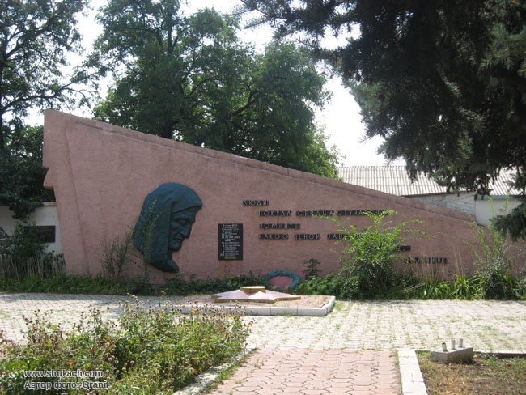

Илова́йск
Город районного значения, подчинённый Харцызскому городскому совету Донецкой области Украины.
С 2014 года населённый пункт, после тяжёлых боев, контролируется частично признанной Донецкой Народной Республикой.
Основан в 1860-х годах — первоначально как разъезд № 17 на железнодорожной линии Харьков—Таганрог.
Название дано от имени собственного донского дворянского рода Иловайских, по землям, которыми владели Иловайские, была проложена железная дорога.
При Украине город стал частью Донецко-Макеевской агомерации, экономической специализацией которой являлось угольная, коксохимическая, химическая промышленность, чёрная металлургия и др.
Административно является городом-спутником Харцызска.
Виды города

Символический камень, установленный на привокзальной площади с указанием года основания города.

Жители встречают поезд с российской гуманитарной помощью.

Памятник паровозу модели "Э" (Разработан в 1914 году).

Вид на вокзал ночью.

Воинский мемориал в честь освободителей Иловайска от фашистских захватчиков.
Посление события из жизни города
 |
Ярмарка!
09 сентября 2022 года с 09:00 до 14:00 на привокзальной площади, возле здания МБУ «Иловайская городская библиотека»,
состоится ярмарка. В ассортименте будут: молочная продукция, подсолнечное масло, рыба, овощи,
трикотаж и многое другое.
|
 |
С днём рождения, город!
Сегодня, 3 сентября, на главной сцене Дома Науки и Техники состоялось мероприятие по случаю
153-ей годовщины города Иловайска. Торжественное мероприятие организовано при поддержке
Общественного Движения «Донецкая Республика».
Почётными гостями праздника стали: депутат народного совета ДНР Бондаренко Александр Александрович и
глава администрации города Иловайска, секретарь местного отделения
Общественного Движения «Донецкая Республика» Руслан Дудников.
Мероприятие стало не только торжественным событием, но и поводом для признания заслуг горожан
в виде Благодарностей и памятных подарков от администрации города Иловайска,
а также от Общественного Движения «Донецка Республика».
|
 |
«Белый, синий, красный»
22 августа в городе Иловайске по инициативе местного отделения Общественного Движения «Донецкая Республика»
и при поддержке администрации города Иловайска в Доме Науки и Техники прошел флэшмоб, посвященный Дню Флага Российской Федерации.
На празднике присутствовала помощник секретаря местного отделения Общественного Движения «Донецкая Республика» Елена Гущина.
|